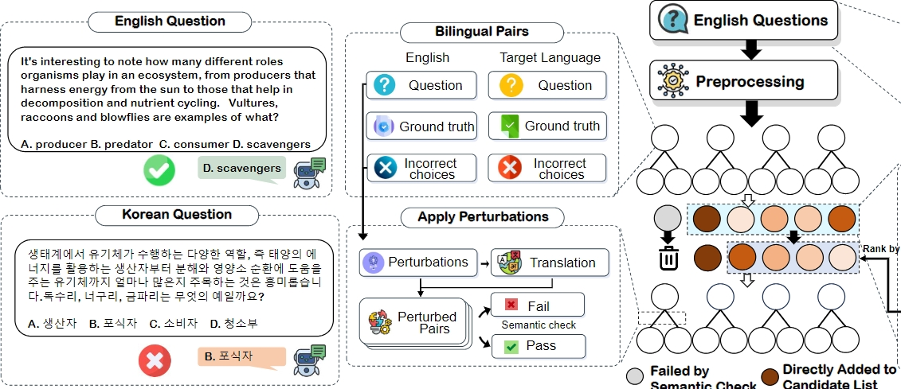

An automatic method that probes the hidden cross-lingual weaknesses of multilingual large language models across 16 languages, revealing where even GPT-4o silently fails outside English.
ACL 2025 (Long Paper)
1 MBZUAI · 2 University of Notre Dame · 3 University of Southern California
* Equal contribution · † Corresponding author:
xiuying.chen@mbzuai.ac.ae,
xzhang33@nd.edu

Xu et al. (2025) show that multilingual LLMs harbor systematic, automatically discoverable cross-lingual weaknesses—even frontier models answer a question correctly in English yet fail it in other languages, with accuracy dropping over 50% on average across 16 languages.
In practice this is a silent failure mode: a model can look near-perfect on English benchmarks while quietly collapsing once the same question is posed in Hindi, Arabic, or Swahili. Cross-Lingual Pitfalls turns the search for these gaps into an automatic procedure. Instead of relying on a fixed, translated test set, it actively generates bilingual (English ↔ target-language) question pairs designed to maximize the accuracy gap, exposing weaknesses that static, English-centric evaluations tend to miss. The result is a reusable, 16-language dataset of 6,713 bilingual pairs (built from MMLU) and a cheap, scalable diagnostic that works even on state-of-the-art models such as GPT-4o and Claude-3.5-Sonnet.
In the authors' words, the work makes three contributions:
Large Language Models (LLMs) have achieved remarkable success in Natural Language Processing (NLP), yet their cross-lingual consistency remains a significant challenge. This paper introduces a novel methodology for efficiently identifying inherent cross-lingual weaknesses in LLMs. Our approach leverages beam search and LLM-based simulation to generate bilingual question pairs that expose performance discrepancies between English and target languages. We construct a new dataset of over 6,000 bilingual pairs across 16 languages using this methodology, demonstrating its effectiveness in revealing weaknesses even in state-of-the-art models. The extensive experiments demonstrate that our method precisely and cost-effectively pinpoints cross-lingual weaknesses, consistently revealing over 50% accuracy drops in target languages across a wide range of models. Moreover, further experiments investigate the relationship between linguistic similarity and cross-lingual weaknesses, revealing that linguistically related languages share similar performance patterns and benefit from targeted post-training. Code is available at https://github.com/xzx34/Cross-Lingual-Pitfalls.
Cite as: Cross-Lingual Pitfalls: Automatic Probing Cross-Lingual Weakness of Multilingual Large Language Models (ACL 2025).
Models answer almost everything correctly in English—accuracy sits at nearly 100%—yet most suffer an average accuracy drop of over 50% once the same questions are posed in a target language. Because mainstream multilingual LLM evaluation is largely English-centric and built on static, translated benchmarks, this gap stays invisible: a leaderboard-topping model can be quietly unreliable for most of its users. That invisibility is exactly why the authors turn to automatic, adversarial probing rather than a fixed test set.
The weakness is not a small-model artifact. Averaged across models, moving a question from English to Chinese drops accuracy by nearly 60%, and even GPT-4o still loses nearly 30% of its accuracy in Chinese. Scale and frontier capability narrow the cross-lingual performance gap but do not close it, so cross-lingual consistency has to be measured directly rather than assumed from a strong English score.
The failures are not random noise; they are structured by linguistic similarity. Linguistically related languages share similar failure patterns, and targeted post-training on one language transfers to its relatives. For deployment this is encouraging: improvement effort can be organized around a language family rather than spent language by language, making mitigation far more efficient.
The burden is unevenly distributed. The sharpest accuracy drops appear in low-resource languages such as Amharic, Yoruba, Swahili, and Zulu, where even state-of-the-art LLMs degrade steeply relative to English. These languages serve large speaker communities, so the cross-lingual performance gap is also an equity problem: the users least served by English-centric systems are the ones the models fail most often.
Surfacing a weakness is inexpensive: identifying a bilingual pair that exposes a failure costs less than $0.05 for most languages. At that price the method is less a one-off benchmark than a continuous, dynamic diagnostic—teams can re-probe each new model or checkpoint and watch the cross-lingual gap, instead of trusting a static, possibly contaminated test set.
Xu et al. (2025) propose an automatic probing method—beam search plus LLM-based simulation—that generates adversarial bilingual question pairs to surface cross-lingual weaknesses, going beyond static translated benchmarks such as MGSM or Global-MMLU.
Starting from MMLU questions, the method uses beam search as a perturbation and search strategy, while an LLM-based simulation stands in for the target model to estimate how a candidate question will be answered in English versus the target language. Each step keeps the variants that widen the English-vs-target accuracy gap, so the search converges on bilingual (English ↔ target-language) pairs where the model is right in English and wrong in the target language. Because the search is gap-maximizing and fully automatic, it produces a dynamic benchmark that adapts to each model instead of reusing one fixed, English-centric test set. There is no branded acronym; the work is referred to simply as Cross-Lingual Pitfalls.
The probing method yields a reusable resource: 6,713 bilingual question pairs spanning 16 languages, all built from MMLU and distributed inside the GitHub repository (there is no separate Hugging Face dataset). They cover a broad range of languages, with the widest cross-lingual gaps appearing in the lowest-resource languages.
| Language | Bilingual pairs |
|---|---|
| Chinese | 342 |
| Japanese | 314 |
| Korean | 456 |
| French | 312 |
| Spanish | 242 |
| Italian | 295 |
| Ukrainian | 323 |
| German | 322 |
| Bengali | 431 |
| Hindi | 327 |
| Arabic | 424 |
| Hebrew | 319 |
| Amharic | 665 |
| Yoruba | 813 |
| Swahili | 417 |
| Zulu | 711 |
| Total (16 languages) | 6,713 |
The low-resource African languages (Amharic, Yoruba, Swahili, Zulu) show the largest cross-lingual gaps. Counts are the number of bilingual (English ↔ target) pairs per language and sum to 6,713; the table reports dataset sizes only—per-language accuracy figures are in the paper.
Most LLMs are trained on heavily English-dominated data, so their knowledge and reasoning are strongest in English and thinner in other languages. Cross-Lingual Pitfalls makes this concrete: models reach nearly 100% accuracy in English but most lose over 50% of that accuracy on average once the same question is asked in a target language, and the drop is largest for low-resource languages. The gap reflects cross-lingual inconsistency, where the same underlying knowledge is not reliably accessible across languages.
The paper introduces an automatic probing method that combines beam search with LLM-based simulation. Starting from MMLU questions, it searches for bilingual (English ↔ target-language) question pairs that maximize the gap between English and target-language accuracy, using a simulated model to score candidates. This adversarial, gap-maximizing search surfaces weaknesses automatically, without hand-writing a fixed test set.
Across the models studied, accuracy is near 100% in English but drops by over 50% on average in the target language. For English→Chinese specifically, the average drop is nearly 60%. These are aggregate figures; the per-language and per-model breakdowns are reported in the paper.
Yes. The evaluation covers ten models, including GPT-4o, Claude-3.5-Sonnet, o1-mini, and Yi-Lightning. Even the strongest models are not immune: GPT-4o still loses nearly 30% accuracy when questions move from English to Chinese. Frontier capability narrows the cross-lingual gap but does not eliminate it.
The dataset covers 16 languages: Chinese, Japanese, Korean, French, Spanish, Italian, Ukrainian, German, Bengali, Hindi, Arabic, and Hebrew, plus the low-resource African languages Amharic, Yoruba, Swahili, and Zulu. The sharpest accuracy drops appear in those low-resource African languages, where even state-of-the-art models degrade steeply relative to English.
Yes. Failures are structured by linguistic similarity: linguistically related languages share similar failure patterns. This also makes mitigation efficient, because targeted post-training on one language transfers to its relatives, letting practitioners improve a whole language family at once rather than one language at a time.
The fine-tuning experiments show real potential for targeted improvement. Because related languages fail in similar ways, post-training aimed at one language transfers to its linguistic relatives, so a focused fine-tuning effort can raise performance across a family of related languages.
Static, translated benchmarks such as MGSM, Global-MMLU, Belebele, or XNLI apply one fixed test set to every model. Cross-Lingual Pitfalls instead generates adversarial bilingual pairs tailored to expose each model's weaknesses, maximizing the English-vs-target gap. It is a dynamic, automatic probe that complements static benchmarks and can be re-run on each new model rather than going stale.
It is a set of 6,713 bilingual (English ↔ target-language) question pairs across 16 languages, built from MMLU. The dataset is distributed inside the project's GitHub repository under an MIT license; there is no separate Hugging Face dataset.
It is cheap. Identifying a bilingual pair that exposes a weakness costs less than $0.05 for most languages, which is what makes the method practical as a continuous, scalable diagnostic rather than a one-time evaluation.
@inproceedings{xu-etal-2025-cross,
title = "Cross-Lingual Pitfalls: Automatic Probing Cross-Lingual Weakness of Multilingual Large Language Models",
author = "Xu, Zixiang and Wang, Yanbo and Huang, Yue and Chen, Xiuying and Zhao, Jieyu and Jiang, Meng and Zhang, Xiangliang",
editor = "Che, Wanxiang and Nabende, Joyce and Shutova, Ekaterina and Pilehvar, Mohammad Taher",
booktitle = "Proceedings of the 63rd Annual Meeting of the Association for Computational Linguistics (Volume 1: Long Papers)",
month = jul, year = "2025", address = "Vienna, Austria",
publisher = "Association for Computational Linguistics",
url = "https://aclanthology.org/2025.acl-long.404/",
doi = "10.18653/v1/2025.acl-long.404",
pages = "8254--8284", ISBN = "979-8-89176-251-0"
}
Prefer the preprint? An arXiv citation for 2505.18673 is also available from the arXiv page.